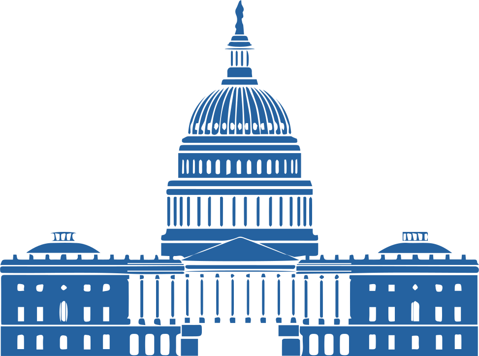

The
National
Budget
How the National Budget Works
The federal budget is the government’s estimate of revenue and spending for each fiscal year. Like a family budget, the federal budget itemizes the expenditure of public funds for the upcoming fiscal year. The federal government’s fiscal year begins each October first.
Some budget expenses are mandatory spending such as money earmarked for Medicare. Other spending is discretionary and will get approved or disapproved through the passage of appropriation bills.

The federal government estimated that it would receive $3.645 trillion in revenue in fiscal year 2020. Most of the revenue is in the form of taxes, paid by taxpayers, either through income or payroll taxes. Below is a basic breakdown of federal government revenue.
American corporations generate over 2 trillion in profit every year yet only pay $255 billion in taxes to the federal government. That is a 12% annual tax rate which is the same rate as the second lowest tax bracket. Additionally, thanks to numerous tax loop holes many major corporations are able to get way with paying zero federal taxes.

Editor's Note
In 2000 american companies made $786 billion in profits and paid $207 billion in taxes that same year for an effective tax rate of 26%. In 2000 corporate taxes made up 10% of the federal tax revenue. In the 20 years since then corporate profits have skyrocketed to over $2 billion. While corporate profits have more than doubled in the 20 years, corporate taxes have stayed the same, with corporations paying $255 billion in 2020 with an effective tax rate of 12%. In 20 years corporations have lowered their effective tax rate by 14% and contributed 3% less to the federal tax revenue.
Government Spending
There are two types of spending in the federal budget process: discretionary and mandatory. Discretionary spending is spending that is subject to the appropriations process, whereby Congress sets a new funding level each fiscal year (which begins October 1st) for programs covered in an appropriations bill. Mandatory spending is simply all spending that does not take place through appropriations legislation, that the government does not debate on how the money is spent once approved. The last part of government spending is paying the interest on the national debt.
67% – Mandatory Spending
+
–
33% – Discretionary Spending
+
–
Sources of Mandatory Spending
Mandatory spending is simply all spending that does not take place through appropriations legislation. Mandatory spending includes entitlement programs, such as Social Security, Medicare, and required interest spending on the federal debt. Mandatory spending accounts for about two-thirds of all federal spending. In most cases, but not all, mandatory spending is ongoing; it occurs each year absent a change in an underlying law that provides the funding. Discretionary spending, on the other hand, will not occur unless Congress acts each year to provide the funding through an appropriations bill. Tax legislation is treated as mandatory spending in many areas of the Congressional budget process.


Sources of Discretionary Spending
Discretionary spending is spending that is subject to the appropriations process, whereby Congress sets a new funding level each fiscal year (which begins October 1st) for programs covered in an appropriations bill. Roughly one-third, or about $1 trillion, of the federal government’s activities are funded through appropriations legislation. Most of the direct activities of the federal government, such as those of the Federal Bureau of Investigations and Department of Defense, are funded through the annual appropriations process. Almost all education programs are discretionary spending programs, except for a small number of programs such as student loans, some vocational grants, school lunch, and a few tax benefit programs.

The government expects to spend $4.746 trillion in 2020. Almost 60% of that pays for mandated benefits such as Social Security, Medicare, and Medicaid—the mandatory spending category. Interest on the U.S. debt is forecast to be $479 billion. Interest on the approximate $23 trillion debt is the fastest-growing federal expense, expected to double by 2028. The remaining $1.4 trillion pays for everything else. This is called discretionary spending. The U.S. Congress changes this amount each year, using the president’s budget as a starting point. The U.S. Treasury must pay the interest to avoid a U.S. debt default. A debt default by the U.S. has unknown consequences since it has never happened before.
The Deficit
The budget deficit is estimated at $1.101 trillion (the difference between $3.645 trillion in revenue and $4.746 trillion in spending). This difference in budgeting and revenue is added to the existing national debt.
Each president and their administration is credited (or blamed) with increases in national debt due to the budgets their administration proposes. However, the approval of the budget is delegated to Congress; this means that it is not the president alone who bears the burden of deficit creation and national debt generation—other elected officials do so as well.
Editor's Note
With the exception of President Obama’s first year in the White House, Obama was successfully able to decrease the national deficit every year that he was in office. Meanwhile, the Republican’s like to claim to be the party of “fiscal responsibility” and say they want to get a handle on the national deficit but under the leadership of President Trump has steadily increased the amount of deficit spending each year he was in office. The increase in deficit spending under President Trump is mainly fueled by the Tax Cuts and Jobs Act of 2017.
Government Debt
The national debt level of the United States is a measurement of how much the government owes its creditors. Since the government almost always spends more than it takes in, the national debt continues to rise.
he national debt in the U.S. has increased more than 10% since President Trump took office in January of 2017 with the debt-to-GDP ratio approaching 110% in 2019.
Under President Obama’s eight years, the national debt increased 100%, from $10 trillion to $20 trillion, although the economic stimulus following the 2008 financial crisis added quite a bit early on during his administration.
It is easy to understand why people (beyond politicians and economists) are starting to pay close attention to the issue these days. Unfortunately, the manner in which the debt level is explained to the public is usually pretty obscure. Couple this problem with the fact that many individuals do not understand how the national debt level affects their daily lives, and you have a centerpiece for discussion—and confusion.
To finance the National Debt the U.S. Treasury Department has to issue Treasury bills, notes, and bonds. These Treasury products finance the deficit by borrowing from investors—both domestic and foreign. These Treasury securities also sell to corporations, financial institutions, and other governments around the world.
* Investors worry about default when the debt-to-GDP ratio is greater than 77%. That’s the tipping point, according to a study by the World Bank.9 It found that if the debt-to-GDP ratio exceeds 77% for an extended period of time, it slows economic growth. Every percentage point of debt above this level costs the country 1.7% in economic growth.
Owners of United States National Debt 2019
Total Debt of the United States – $22.9 Trillion
47% – US Owned Public Debt
+
–
28% – Foreign Debt
+
–
25% – Intragovernmental Debt
+
–
US Owned Public Debt
The public debt is the United States’ debt that is held by non US government agencies. The public holds $17.1 trillion of the national debt. Foreign governments and investors hold 39% of it. Individuals, banks, and investors hold 17%. The Federal Reserve holds 11%. Mutual funds hold 9%. State and local governments own 5%. The rest is held by pension funds, insurance companies, and Savings Bonds.

Foreign Debt
Foreign debt is an outstanding loan or set of loans that one country owes to another country or institutions within that country. Foreign debt also includes obligations to international organizations such as the World Bank, Asian Development Bank or Inter-American Development Bank. Total foreign debt can be a combination of short-term and long-term liabilities. Also known as external debt, these outside obligations can be carried by governments, corporations or private households of a country.

Intragovernmental Debt
Intragovernmental debt is part of the National debt held by United States government agencies. Some agencies, like the Social Security Trust Fund, take in more revenue from taxes than they need. Rather than stick this cash under a giant mattress, these agencies invest in U.S. Treasurys. The reason that different agencies would buy government debt is so that other government agencies can use that money. Additionally, if the agencies that own US debt need to redeem the cash that they invested they can easily do so by redeeming the US bonds, which are essentially guaranteed to be redeemable.
United States’ Debt’s Impact on the Economy
Moderate increases in the debt will boost economic growth. But too much debt increases growth too fast. If growth is faster than the ideal range of 2%-3%, it will create a boom, which leads to a bust, or a recession, when the market finally slows down.
An ever-increasing national debt slowly dampens growth over the long term. The more debt that the United States government has the higher the interest rates that banks lend out. That slows the economy because businesses borrow less. They don’t have the funds to expand and hire new workers which help to grow the economy.
The national debt never becomes a major problem until the government is no longer able to pay its bills. National debts are generally never a major problem until people, institutions and other governments are no longer willing to lead the country money. To make that decision, investors compare the debt to the nation’s ability to pay it off. The debt-to-GDP ratio does just that. It divides the debt by the nation’s gross domestic product. That’s everything the country produces in a year. Investors worry about default when the debt-to-GDP ratio is greater than 77%. Every percentage point of debt above this level costs the country 1.7% in economic growth.
As of January 2, 2020, the U.S. national debt reached $23.2 trillion. It is 108% of GDP. It is also 6.4 times the annual federal revenues. The greatly ballooned debt is largely due to the Great Recession and to the ongoing War on Terror, both of which greatly contributed to the increase in national debt.
However, while the national debt seems to have greatly surpassed what is normally considered a tipping point, the national debt over all does not seem to have a major negative impact as the economy of the United States continues to grow and expand even with the added weight of the national debt.